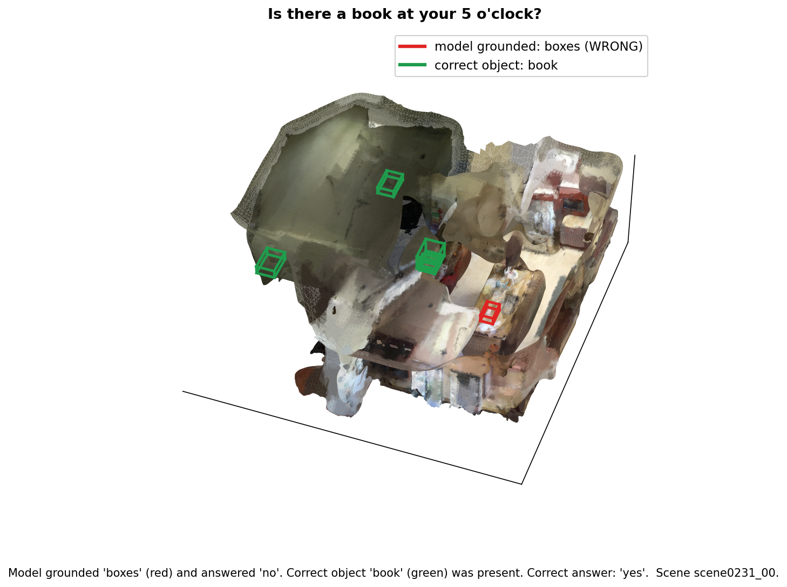
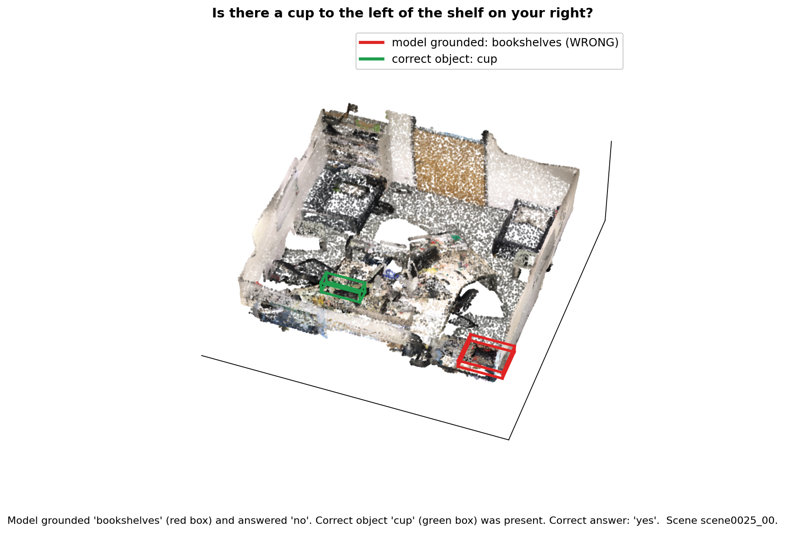
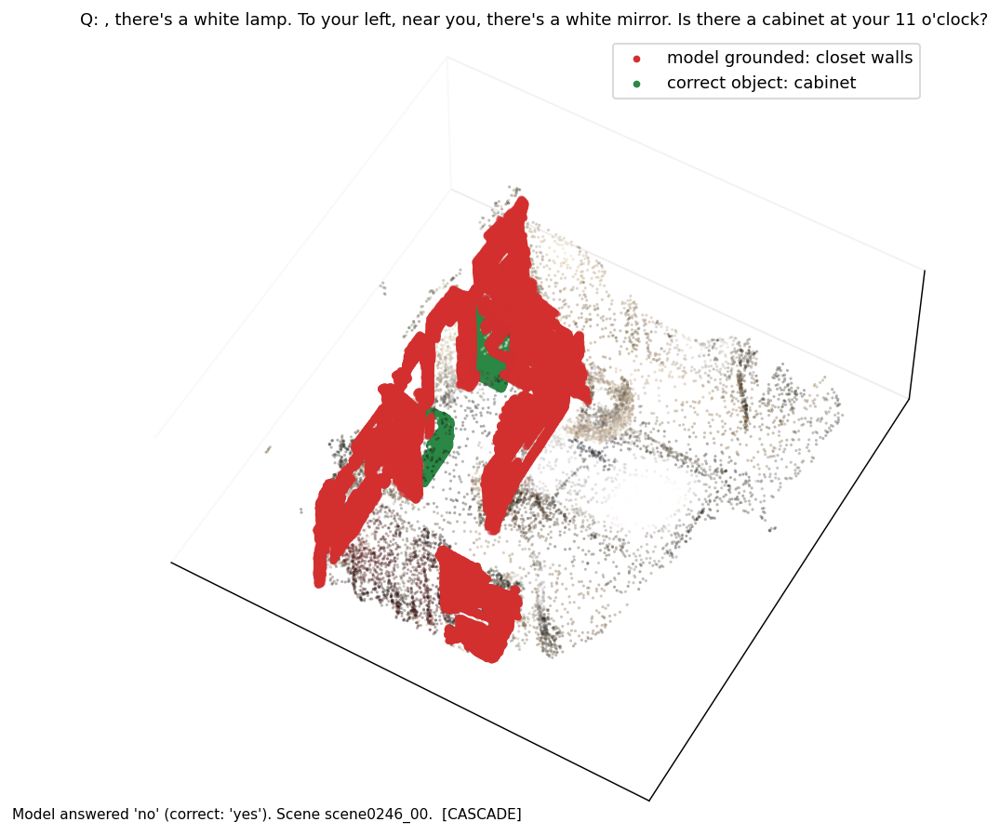
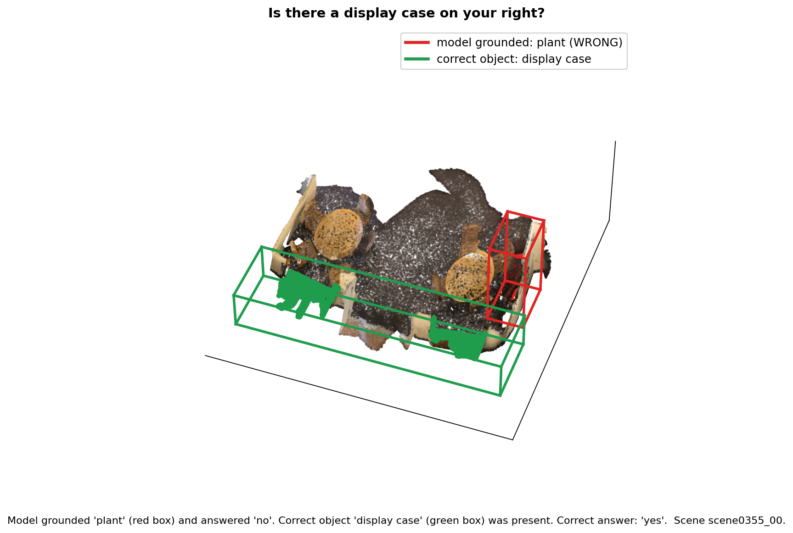
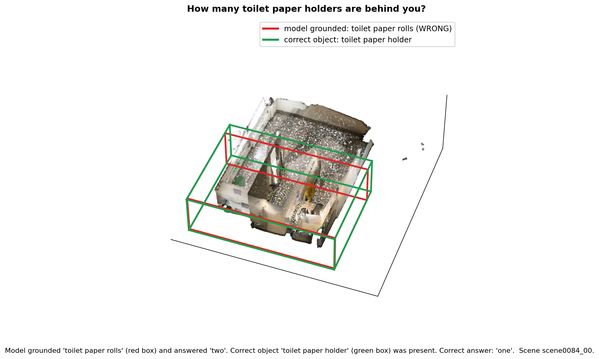
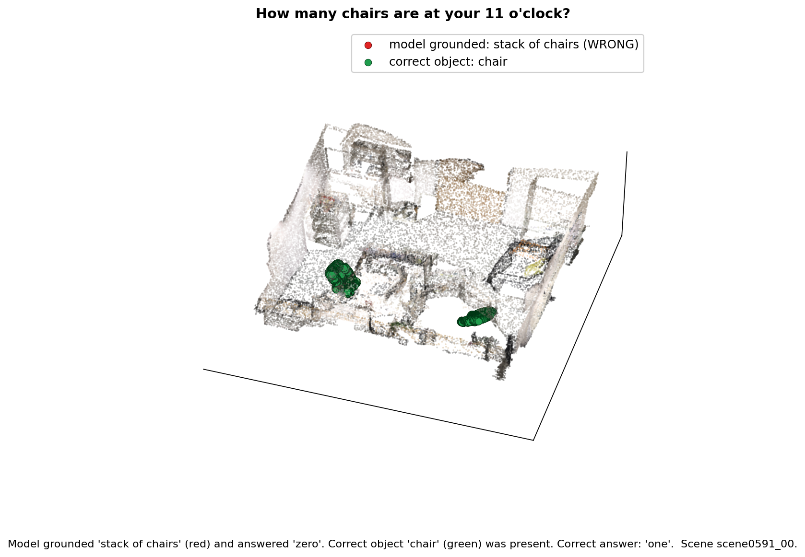

EE 243 Advanced Computer Vision · University of California, Riverside · Spring 2026
An analysis of SceneCOT: Eliciting Grounded Chain-of-Thought Reasoning in 3D Scenes (ICLR 2026)
Overview
SceneCOT answers questions about 3D rooms by reasoning in four fixed steps, and a middle step called grounding is supposed to point to the specific object the question is about. We reproduce SceneCOT's evaluation, then expose a structural limitation: the four steps run in a strict sequence with no way to check or correct the grounding step, so any grounding error is final and flows straight into the answer.
On the two most grounding-dependent question types, the large majority of wrong answers come from this exact failure, and a large share of the model's correct answers are produced without correct grounding, which means its accuracy overstates how much it actually understands the scene. This is not a claim that the model simply makes mistakes. The point is about the design: SceneCOT commits to a single grounding result at inference with no recovery mechanism, and we show empirically that this is where its failures concentrate.
We also identify a second bottleneck at a different stage of the pipeline (spatial representation). Even when the model grounds the right objects, spatial-relationship questions fail far more often than existence questions. We trace this to how SceneCOT passes spatial information to the language model: object coordinates are rounded to a ten-centimeter grid before the model reads them, which destroys the fine geometry needed for relations like "in front of" or "within the area of." The course asked for depth over breadth, so we studied these two bottlenecks carefully with both quantitative and qualitative evidence.
How SceneCOT works
SceneCOT is built on the LLaVA-1.5 vision-language model. For every question it runs four steps in a fixed order, and each step consumes the output of the previous one.
obj_prob list. Our focus.Because the steps are sequential, step 4 only ever sees what step 3 grounded. A grounding error in step 3 cannot be undone later.
How grounding actually works, in detail: an off-the-shelf 3D instance segmenter,
Mask3D, breaks the room into candidate object proposals. The grounding
module, based on PQ3D, then scores each proposal for how well it
matches the question and emits an object-probability list. In the saved reasoning
chain this shows up as an <obj_prob> section, for example
book 0.75 boxes 0.64 desk 0.63. The objects with high probability are taken
as "the objects the model grounded." The geometry math (clock directions, distances) is
computed by fixed rules, not learned, so the spatial math itself is exact. The strength
the paper emphasizes is grounding-QA coherence, getting grounding and answer correct
together.
Research lineage
Each earlier line of work solved part of the problem and left something open. Click any paper to read our full discussion of what it contributed and where it fell short.
Chain-of-Thought Prompting
Wei et al., 2022 · arXiv:2201.11903
Taught models to reason step by step before answering, but only in text.
Before Chain-of-Thought prompting, simply scaling large language models still failed on multi-step reasoning, symbolic logic, and complex arithmetic. In the standard zero-shot setup the model attempts a direct mapping from input to output, forcing all of the multi-step deduction into a single forward pass, which led to high hallucination and logical errors.
The paper introduced a step-by-step reasoning chain before the final answer, mimicking human deduction. Instead of optimizing P(y|x), it effectively optimizes P(y, z|x), where z is the sequence of intermediate steps. By giving few-shot examples that include step-by-step breakdowns, the model is conditioned to spend more computation on the problem. This worked especially well on models above roughly 100B parameters and sharply improved accuracy on benchmarks like GSM8K and SVAMP, with no fine-tuning, architecture changes, or task-specific gradients.
What it left open: the method is constrained to 1D text tokens. It has no embedding space for spatial geometry, 3D point clouds, or visual grounding. SceneCOT bridges this gap by mapping physical 3D coordinate logic into a sequential reasoning framework.
PQ3D: Promptable Queries for Unified 3D
2024 · arXiv:2405.11442
Unified many 3D inputs and tasks in one architecture, but answers in a single pass.
Most 3D vision-language models were heavily fragmented: different raw inputs (point clouds, multi-view 2D images) needed separate encoding pipelines, and tasks like segmentation and question answering needed hard-coded, task-specific output heads.
PQ3D introduced a unified architecture. It projects various 3D representations into a shared 3D coordinate space via unsupervised segment-level grouping. The core engine is an attention-based query decoder that takes promptable queries (text, bounding boxes, even image sketches) and extracts task-relevant features from the unified 3D space. Those features pass through universal output heads that simultaneously predict instance masks, relevance scores, and text. It is computationally efficient and set records across ten datasets (including a 13.4% CIDEr boost on Scan2Cap and strong gains on ScanNet200). Its ability to handle zero-shot novel prompt types, like using a 2D sketch to segment a 3D object, shows the representation alignment is robust. SceneCOT reuses PQ3D as its grounding module.
What it left open: the attention step is excellent at extracting features from a prompt, but it operates in a single direct-mapping step. It cannot handle recursive logic, so when a prompt requires navigating a complex spatial dependency, PQ3D struggles to break it down.
Chat-Scene
NeurIPS 2024 · arXiv:2312.08168
Turned scenes into object tokens an LLM can read, but depends on the detector being right.
Training multimodal LLMs for 3D environments is bottlenecked by the scarcity of high-quality 3D scene-language data. Feeding raw 3D point-cloud embeddings directly into an LLM often loses granular, object-level semantic clarity, making it hard to ground text to specific items in a cluttered room.
Chat-Scene bypasses raw geometry by relying on object identifiers. It uses 3D detectors like Mask3D to decompose a scene into discrete object proposals, then assigns a set of learnable tokens to each object, augmented with rich 2D multi-view features from models like DINOv2. This turns continuous 3D space into a discrete sequence of object-level tokens that an LLM like Vicuna can ingest. By forcing the LLM to interact with discrete object tokens rather than raw scenes, it achieves very high accuracy on object referencing and 3D grounding, ranking first on ScanRefer and Scan2Cap. SceneCOT inherits this detector-proposal style of grounding.
What it left open: heavy reliance on the initial 3D object proposals is a double-edged sword. If the upstream detector misses an object or merges two objects, the LLM cannot recover, because it lacks access to the raw spatial context. It also lacks a structured mechanism for deep, multi-hop spatial deduction. This is exactly the inherited weakness our experiment measures.
LEO: An Embodied Generalist Agent
ICML 2024 · arXiv:2311.12871
Unified perception, reasoning, and action, but is weak on deep step-by-step deduction.
Most earlier LLMs and VLMs are passive observers: they can describe a scene but cannot operate within it. Embodied AI needs a model that processes egocentric first-person views, understands global 3D topology, and outputs commands to interact with the environment.
LEO is an embodied, multimodal generalist agent. It fuses egocentric 2D images, global 3D point clouds, and text instructions. The architecture uses a decoder-only LLM (tuned via LoRA) trained in two stages: 3D vision-language alignment, then vision-language-action instruction tuning. The LLM's vocabulary is expanded to include physical action tokens alongside text tokens. LEO unifies perception, reasoning, and planning into a single autoregressive sequence and shows that LLMs can output valid, executable action tokens for robotic manipulation and navigation, reaching state-of-the-art on embodied navigation.
What it left open: LEO struggles with rigorous step-by-step analytical depth. Its objective is optimized for broad, generalized embodied actions, so when faced with a complex static 3D reasoning query that requires tracking multiple geometric constraints rather than moving toward a goal, its logic can break down.
The common gap: none of the four combine step-by-step reasoning with explicit object grounding. SceneCOT fills it. But it inherits the detector-dependence of PQ3D and Chat-Scene, so its grounding is only as good as the Mask3D proposals and PQ3D scoring, with no mechanism to recover when grounding is wrong. Our experiment measures the consequence of that inherited weakness inside SceneCOT's sequential design.
The limitation, stated precisely
SceneCOT's reasoning chain is sequential and committed. At inference time:
This is the precise sense in which it is a limitation of the architecture, not just model imperfection. A different design, one that grounds several candidates and reasons over alternatives, or that flags low confidence and re-grounds, could in principle recover. SceneCOT's straight-through sequential design cannot. We also measure the reverse: the fraction of correct answers produced without correct grounding. When that fraction is large, raw accuracy overstates how much the model truly grounds its answers. We are careful that this is the accuracy-versus-grounding gap, not the paper's coherence metric.
Setup
Everything below the surface, folded so the page stays readable. Open any panel for the full detail.
Training data, SceneCOT-185K. About 185,000 examples, each carrying a full step-by-step reasoning chain (the genuinely new part). It combines 145.6K from MSQA (an existing situated-reasoning benchmark built on real ScanNet rooms) and 40K from GQA3D (object-centric pairs the authors auto-generated with GPT-4o). The 3D scenes themselves are ScanNet; the authors reused ScanNet and added the reasoning chains and GQA3D questions rather than collecting new scenes.
What we actually evaluate on: the MSQA test split. The MSQA annotations
are bundled inside SceneCOT's released data at
data_assets/scenecot_cot_data/MSQA; we did not download or build MSQA
ourselves. The eval script points at it through the SCENECOT_MSR3D_ANNO_DIR
variable. Each MSQA entry places an agent at a position and orientation in a real ScanNet
room and asks about nearby objects, recording the scene id, the pose, the question type,
and the ground-truth reasoning chain (which includes the objects that should be
grounded). The test split spans nine question types; our cascade study uses counting and
existence.
| Type | Count | Why we chose it |
|---|---|---|
| Counting | 133 | Requires finding and enumerating the right objects, so grounding directly determines the count |
| Existence | 96 | Requires finding the object to say whether it is present |
That is 229 questions; 190 were evaluable (132 counting, 58 existence) after dropping questions whose ground-truth chain had no grounded object to compare against. The "objects that should have been grounded" are used only as an after-the-fact measuring stick; the model never sees them at inference, which is exactly why the limitation is structural.
We ran SceneCOT's full grounded-QA evaluation on an NVIDIA RTX A6000. The run loaded the
LLaVA backbone, the PQ3D grounding module, and the trained weights, then answered every
test question and scored itself, taking about three hours and forty-seven minutes. For
every question it saved the question, the correct answer, and its full reasoning chain
including the <obj_prob> grounding section and the final answer. The
MSQA predictions file holds 826 questions. These confirmed our setup before we did
anything of our own.
| Metric | Score |
|---|---|
| Overall (em_refined) | 52.1% |
| Existence | 65.4% |
| Spatial | 51.3% |
| Appearance | 47.1% |
em_refined is refined exact match, comparing predicted and correct answers
after light text cleanup so minor formatting differences are not penalized.
The baseline tells us how often the model is right but not why it is wrong. The key
realization is that the saved chains already contain the grounding step's
<obj_prob> list, so we can see which objects the model chose and compare
them to the objects it should have chosen, entirely from the saved predictions with no GPU
and no model rerun. Our analysis asks two things: when an answer is wrong, did the failure
start in grounding or in reasoning; and when an answer is right, was it actually grounded.
The analysis sorts every question using two yes/no facts:
<obj_prob> objects and confidences, filtering out non-object stopwords.| Answer right | Answer wrong | |
|---|---|---|
| Grounding right | Correct (pipeline worked) | Reasoning failure |
| Grounding wrong | Correct answer without correct grounding | Cascade |
Quantitative results
Built from the 190 evaluable counting and existence questions (132 counting, 58 existence).
| Category | Counting (n=132) | Existence (n=58) |
|---|---|---|
| Right grounding, right answer | 8 (6.1%) | 19 (32.8%) |
| Wrong grounding, wrong answer (cascade) | 61 (46.2%) | 15 (25.9%) |
| Wrong grounding, right answer | 48 (36.4%) | 24 (41.4%) |
| Right grounding, wrong answer (reasoning) | 15 (11.4%) | 0 (0.0%) |
Of all wrong answers, 83.5% trace back to wrong grounding (80.3% for counting, 100% for existence). A wrong answer is either a cascade (wrong grounding) or a reasoning failure (right grounding, wrong answer anyway), and the percentage is cascades divided by all wrong answers. For existence, all 15 wrong answers were cascades and none were reasoning failures, so 100%. For counting, 61 of 76 wrong answers were cascades, so 80.3%. Because the pipeline never revisits grounding, these errors propagate straight to the answer. That is the cascade, and it is the dominant failure mode.
One detail worth reading off the table: on counting the "right grounding, right answer" group is tiny, only 8 of 132. That is partly because grounding on counting is genuinely hard (the model rarely grounds every correct object) and partly because counting is hard even when grounding is right, which the reasoning-failure row (15 of 132) shows directly.
On counting, 36.4% of answers were correct even though the model grounded the wrong object. Counting has many possible answers, so this is not the coincidence a yes/no guess could produce. The model often lands on the right number while looking at the wrong objects. This is the gap between answer accuracy and correct grounding, and it is not the paper's coherence metric: it shows raw accuracy is an inflated picture of how grounded the answers really are.
Qualitative results
For cascade examples we render the actual ScanNet room and draw a red box around the object the model wrongly grounded and a green box around the correct object. If the grounding error is real, the red box sits on the wrong object while the green box sits on the object the question was actually about.
The SceneCOT paper shows smooth, textured 3D rooms. We could not reproduce that exact look
because the released data
(SceneVerse/ScanNet/scan_data/pcd_with_global_alignment) contains point clouds
only: for each scene we get XYZ coordinates, RGB color, and a per-point instance id, but no
surface mesh (no faces or triangles). The paper's smooth figures use the original ScanNet
textured meshes, which are not part of this release.
Getting those meshes is not a quick step. The full ScanNet dataset is gated behind a signed terms-of-use agreement, the download is on the order of a terabyte, and it would then need its own processing pipeline to align and render. That was outside the scope and time of this project. So instead we wrote our own renderer that (1) loads the point cloud and instance-to-label dictionary, (2) runs Poisson surface reconstruction via Open3D to turn the raw points into a continuous surface, (3) finds the instance ids matching the grounded and correct objects and draws a tight 3D box around each, and (4) renders from an angled view. Because we reconstruct the surface from points rather than using a real mesh, the surfaces are bumpy in places and some boxes are loose. We show them as honest reconstructed evidence, not polished paper figures.






Success cases
| Question | What the model grounded | Answer |
|---|---|---|
| Is there a copier in the room? | copier | yes (correct) |
| Is there a whiteboard at your 5 o'clock? | whiteboard | yes (correct) |
| Is there a backpack on the table? | backpack | yes (correct) |
These show the intended behavior: the model finds the exact object the question asks about and answers from it. They also confirm our analysis is not simply labeling everything a failure; when grounding is right, the pipeline works.
Part 3 · Spatial reasoning (Option A)
Led by Simarpal Singh. Even when SceneCOT grounds the right objects, spatial-relationship questions fail far more often than existence questions. We trace this to how the model receives spatial information.
On the full MSQA test set (strict exact match), spatial relationship scores 21.1% (40 of 190), near the bottom alongside navigation (14.6%), while existence reaches 82.3%. One hundred fifty of 190 spatial-relationship questions failed.
On a stress-test slice filtered for explicit directional language, spatial-relationship accuracy drops further to 16.7% (7 of 42), below the full-set baseline. The model does worse on exactly the subset where fine geometry matters most.
SceneCOT does not pass raw 3D coordinates to the language model. After grounding, object
locations are injected as text inside a chain-of-thought tag, where each object is written
as egocentric x, y, z plus size, for example
microwave: -3.0,-0.7,1.4,0.7,0.2,0.5. The language model reasons about spatial
relationships from these strings. The problem: coordinates are formatted to one decimal
place, which snaps every axis to a ten-centimeter grid. Relations that depend on finer
offsets, like whether a cup is on a table or a lamp is in front of versus above a chair,
become ambiguous before the language model ever reasons about them.
In scenecot_agent.py, the function that builds the location text converts each
object's 3D center into the agent's egocentric frame, then formats it with one decimal on
every axis. This is a deterministic input-side operation, not a learned failure. Replicating
this path (standard library only) shows three concrete failure modes:
Three tools that build on each other:
Baseline MSQA breakdown (strict exact match):
| QA type | Correct | Total | EM |
|---|---|---|---|
| existence | 79 | 96 | 82.3% |
| spatial relationship | 40 | 190 | 21.1% |
| navigation | 21 | 144 | 14.6% |
| counting | 56 | 133 | 42.1% |
Stress-slice evaluation (114-question slice vs full baseline):
| QA type | Correct | Total | EM (slice) | EM (baseline) |
|---|---|---|---|---|
| spatial relationship | 7 | 42 | 16.7% | 21.1% |
| navigation | 7 | 39 | 17.9% | 14.6% |
| counting | 9 | 24 | 37.5% | 42.1% |
A different failure mode from the cascade: here the objects are often grounded correctly, but the coarse coordinate text cannot encode the relation the benchmark asks for, so the model asserts a plausible but wrong relation.
| Question (short) | Ground truth | Predicted |
|---|---|---|
| Cabinet and microwave at 6 o'clock | microwave within the area of the cabinet | microwave supported by the cabinet |
| Lamp relative to the armchair | lamp in front of the armchair | lamp above the armchair |
| Bottle and soap dish | bottle lower than soap dish, within shower area | bottle supported by the soap dish |
In each case the close coordinates collapse after rounding, so distinctions like "within" versus "on", or "in front of" versus "above", are underspecified in the text the model reads.
Reproduce & explore
The full analysis code, the commented scripts, the scene-render generator, and the baseline logs are all in the repository. The grounding cascade analysis runs entirely on the saved predictions, so no GPU is needed to reproduce the core result. A video walkthrough demonstrates the implementation end to end.